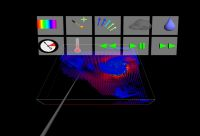

IEEE Visualization 2004 Contest Entry
PDF: Link to PDF Document
Video: Link to Video
Presentation: Link to Powerpoint Presentation from contest session
Immersive Visualization of the Hurricane Isabel Dataset
Authors
- Kenny Gruchalla, BP Center for Visualization, University of Colorado, gruchall@colorado.edu
- Jonathan Marbach, BP Center for Visualization, University of Colorado, marbach@colorado.edu
{kind=link}
Contest Entry Visualization System
We developed an immersive prototype application, AtmosV, developed to interactively visualize the large multivariate atmospheric dataset provided by the IEEE Visualization 2004 Contest committee. The visualization approach is a combination of volume and polygonal rendering. AtmosV was derived from the Immersive Drilling Planner, a visualization and planning tool for oil and gas wells, also developed at the BP Center for Visualization. The development team consisted of Kenny Gruchalla and Jonathan Marbach, both Ph.D. students in computer science at the University of Colorado. The immersive application was developed and evaluated on both a shared-memory parallel machine and a commodity cluster. Using the cluster we were able to visualize multiple variables at interactive frame rates.
Criterion 1: Interactivity
We employed a combination of volume and polygonal rendering
to allow users to explore multiple variables simultaneously. In our
demonstration, total cloud moisture, total precipitation, and pressure
are volumetrically rendered. Wind is visualized through an interactive
vector-fleld plane. Two types of interactive probes provide
information on scalar values. The system was written in C++ using
OpenInventor and the VolumeViz OpenInventor extension from
Mercury Systems. To achieve interactive volume rendering frame
rates, the volume data was downsampled to the nearest power of 2
dimension, 256x256x64, using a box-filter method. The floating-point
scalar volumes were converted to byte volumes at runtime.
We took an immersive visualization approach to the problem. This
approach physically immerses users in a virtual world, where they can
explore multiple variables of the dataset by looking through them,
walking around them, and viewing them from an egocentric perspective.
The demonstration video shows AtmosV in a Fakespace Flex, a
configurable large-screen projection-based immersive virtual
environment (IVE). The Flex has four display screens that were driven
by a commodity PC cluster with four nodes, each equipped with a Nvidia
QuadroFX 3000G graphics card. A three-dimensional effect was created
inside the IVE through active stereo projection. The data was
interacted with using a wired InterSense wand, a three-dimensional,
six-degrees-of-freedom pointing device with four buttons and small
joystick. An InterSense VET 900 tracking system tracked the position
and orientation of the users head and the wand. Tracking the position
and orientation of the user's head allowed the user to move around in
the virtual world and see that world from different perspectives.
Criterion 2: Exploratory Support
|  |
{kind=link}
{kind=link}
{kind=link}
As an immersive application, AtmosV provides the users the ability to physically
navigate and explore the data space. Two types of navigation are provided:
physical navigation and pointing. Physical navigation maps a user's
physical movements, such as walking, into corresponding motions in the virtual world.
The pointing technique allows users to reach areas of the data space outside of the
physical bounds of the IVE. Pressing forward on the wand's joystick will "drive" the
user in the direction the wand is pointing. Pressing backwards on on the wand's joystick
will move the user in the opposite direction. Pressing right or left on the joystick
will rotate the scene around the user. The joystick is pressure sensitive and the amount
of pressure exerted on it maps to the speed of travel.
In addition to the immersive navigation features, AtmosV
provides three interactive three-dimensional widgets: a text probe, a
vector-field plane, and a column probe. The text probe widget provides
an interactive three-dimensional text readout of multiple scalar
variables. The probe is manipulated by dragging a small sphere to an
area of interest. As the sphere is moved, a text readout is updated.
The text reports all scalar values available at the center of the
sphere. In our demonstration, total cloud moisture, total
precipitation, atmospheric pressure, and temperature are provided in
the text readout; however, the probe can be configured to interrogate
any of the scalar data variables.
The column probe provides a means to interrogate a column of
a scalar dataset. This is achieved by presenting scalar values on a
cylindrical surface through a texture look up. The columns can be
interactively moved, allowing users to explore the data space. In our
demonstration, the column probes display temperature; however, any of
the scalar data variables can be interrogated using this probe.
The vector-field plane provides a mechanism to visualize the
Isabel wind vector data. The wind vectors are rendered as lines. The
length and color of each line is based on the magnitude of its
corresponding vector. Users may move the plane to interactively choose
which slice of the vector-field is displayed. The user accomplishes
this by selecting and dragging the virtual plane with the wand.
AtmosV also provides an immersive transfer function editor, allowing the user to
explore the volumetric space. Each channel of the colormap is displayed separately on
a rectangular panel, allowing the user to edit the red, green, blue, and alpha
components individually. As the user "paints" a curve onto any of the color-component
panels, the opacity panel displays the composite RBGA color.
All the features of AtmosV can be accessed through a
three-dimensional toolbar. Through this toolbar a user can control the
current time step, start and stop an animation loop, switch between
volumetric datasets, toggle the wind vector field, introduce text
probes, introduce column probes, and access the immersive transfer
function editor. Short-cut buttons on the wand are also provided to
start and stop animation and to step forward through time.
Criterion 3: Multiple Characteristics
{kind=link}
{kind=link}
{kind=link}
Through a combination of both polygonal and volume rendering we are able to show multiple variables simultaneously. Our system will only volume render one scalar dataset at a time; however, using our three-dimensional widget-set, scalar and vector values at various areas of interest can be visualized concurrently with the selected volume data. For example, both Figure 1 and Figure 2 depict visualizations of multiple characteristics. In Figure 1, the user has selected the volumetric visualization of the total cloud data through the toolbar. In conjunction with the cloud volume, the user has placed a text probe near the storm clouds in the upper atmosphere and has dragged the wind vector-field plane into the lower atmosphere. In Figure 2, the user has selected the volumetric visualization of the pressure data, and edited the transfer function to highlight an area of low pressure. In conjunction with the pressure data, the users has dragged three column probes (representing temperature) and a text probe into the scene.
{kind=link}
Additional Comments
We evaluated the system on both the commodity cluster and a
20-processor SGI Onyx 3800 with four InfiniteReality3 graphics pipes.
The Onyx has a 64-bit shared memory architecture that provided us with
20 gigabytes memory. Theoretically, the entire down-sampled Isabel
dataset could be stored in RAM on this machine. However, the Onyx was
not able to render the volumetric data at interactive frame rates.
As our video demonstrates, AtmosV is capable of visualizing
multiple variables at interactive frame rates using the 32-bit cluster.
However, the cluster has its own limitations, primarily memory. Each
node of the cluster has only one gigabyte of memory, restricting our
application to a sub-set of the data for any one execution. For
example, this limited us to less than twelve time steps of cloud
moisture, precipitation, pressure, temperature, and wind data. The
floating-point wind triplet was the limiting factor: without loading
the wind data, there were sufficient resources to visualize a complete
forty-eight time steps of four scalar volumes with our application on
the cluster. Clearly there are tradeoffs between the two systems. Since
interaction was a driving goal of the contest, the cluster was chosen
for the demonstration video.
{kind=link}
{kind=link}